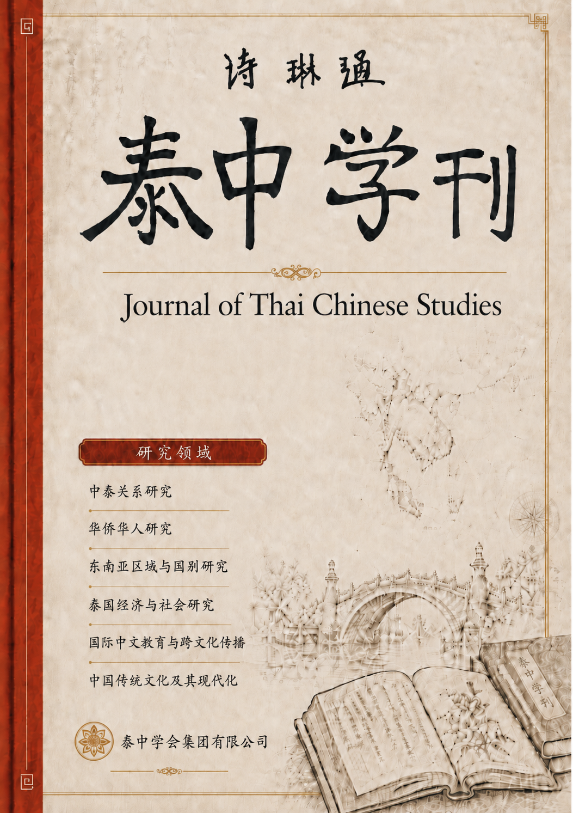
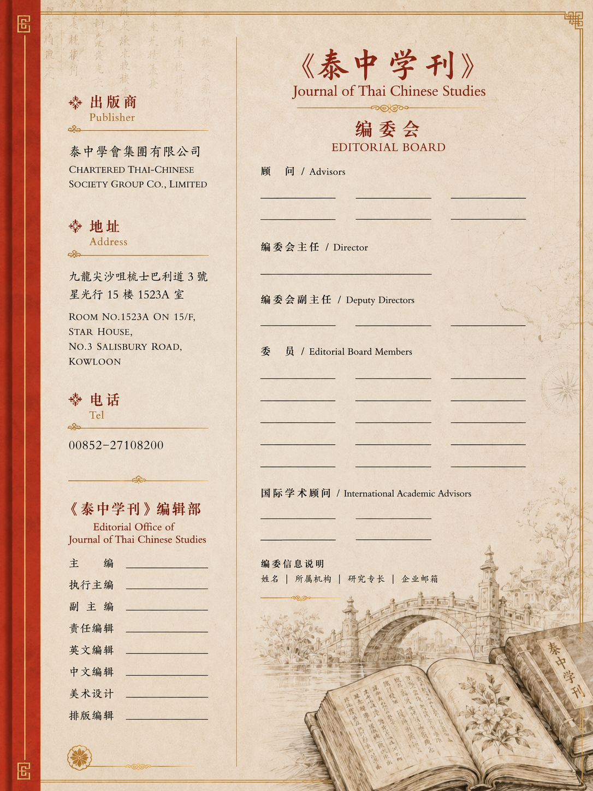

期刊发表
Publications
查看《泰中学刊》正式出版的各卷、 各期内容及文章目录。
《泰中学刊》是一份以中泰关系研究为核心， 兼及华侨华人研究、东南亚研究、 泰国经济与社会研究、 国际中文教育与跨文化传播、 中国传统文化及其现代化， 以及泰学译丛与经典重刊的综合性学术期刊。 期刊坚持学术规范与同行评审， 致力于推动泰国、中国及东南亚相关研究成果的整理、 发表与传播，促进中泰两国及东南亚区域学术交流。
Journal Presentation


Aims & Scope
Journal Contents